原文连接:https://www.cnblogs.com/7758520lzy/p/12106929.html
内容选自 即将出版 的《Python3 反爬虫原理与绕过实战》，本次公开书稿范围为第 6 章——文本混淆反爬虫。本篇为第 6 章中的第 4 小节，其余小节将 逐步放送 。
字体反爬虫开篇概述
在 CSS3 之前，Web 开发者必须使用用户计算机上已有的字体。但是在 CSS3 时代，开发者可以使用@font-face 为网页指定字体，对用户计算机字体的依赖。开发者可将心仪的字体文件放在 Web 服务器上，并在 CSS 样式中使用它。用户使用浏览器访问 Web 应用时，对应的字体会被浏览器下载到用户的计算机上。

在学习浏览器和页面渲染的相关知识时，我们了解到 CSS 的作用是修饰 HTML ，所以在页面渲染的时候不会改变 HTML 文档内容。由于字体的加载和映射工作是由 CSS 完成的，所以即使我们借助 Splash、Selenium 和 Puppeteer 工具也无法获得对应的文字内容。字体反爬虫正是利用了这个特点，将自定义字体应用到网页中重要的数据上，使得爬虫程序无法获得正确的数据。
6.4.1 字体反爬虫示例
示例 7：字体反爬虫示例。
网址： http://www.porters.vip/confus... 。
任务：爬取影片信息展示页中的影片评分、评价人数和票房数据，页面内容如图 6-32 所示。
图 6-32 示例 7 页面
在编写代码之前，我们需要确定目标数据的元素定位。定位时，我们在 HTML 中发现了一些奇怪的符号，HTML 代码如下：
<div class="movie-index">页面中重要的数据都是一些奇怪的字符，本应该显示“9.7”的地方在 HTML 中显示的是“☒.☒”，而本应该显示“56.83”的地方在 HTML 中显示的是“☒☒.☒☒”。与 6.3 节中的映射反爬虫不同，案例中的文字都被“☒”符号代替了，根本无法分辨。这就很奇怪了，“☒”能代表这么多种数字吗？
要注意的是，Chrome 开发者工具的元素面板中显示的内容不一定是相应正文的原文，要想知道“☒”符号是什么，还需要到网页源代码中确认。对应的网页源代码如下：
<div class="movie-index">从网页源代码中看到的并不是符号，而是由 开头的一些字符，这与示例 6 中的 SVG 映射反爬虫非常相似。我们将页面显示的数字与网页源代码中的字符进行比较，映射关系如图 6-33 所示。
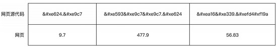
图 6-33 字符与数字的映射关系
字符与数字是一一对应的，我们只需要多找一些页面，将 0 ~ 9 数字对应的字符凑齐即可。但如果目标网站的字体是动态变化的呢？映射关系也是变化的呢？
根据 6.3 节的学习和分析，我们知道人为映射并不能解决这些问题，必须找到映射关系的规律，并使用 Python 代码实现映射算法才行。继续往下分析，难道字符映射是先异步加载数据再使用 JavaScript 渲染的？
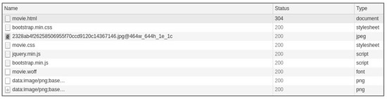
图 6-34 请求记录
网络请求记录如图 6-34 所示，请求记录中并没有发现异步请求，这个猜测并没有得到证实。CSS 样式方面有没有线索呢？页面中包裹符号的标签的 class 属性值都是 stonefont：
<span class="stonefont">.</span>但对应的 CSS 样式中仅设置了字体：
.stonefont {
既然是自定义字体，就意味着会加载字体文件，我们可以在网络请求中找到加载的字体文件 movie.woff，并将其下载到本地，接着使用百度字体编辑器看一看里面的内容。
百度字体编辑器 FontEditor （详见 http://fontstore.baidu.com/st... ）是一款在线字体编辑软件，能够打开本地或者远程的 ttf、woff、eot、otf 格式的字体文件，具备这些格式字体文件的导入和导出功能，并且提供字形编辑、轮廓编辑和字体实时预览功能，界面如图 6-35 所示。
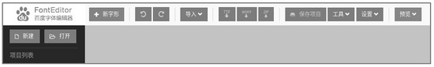
图 6-35 百度字体编辑器界面
打开页面后，将 movie.woff 文件拖曳到百度字体编辑器的灰色区域即可，字体文件内容如图 6-36 所示。
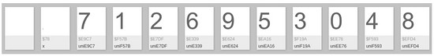
图 6-36 字体文件 movie.woff 预览
该字体文件中共有 12 个字体块，其中包括 2 个空白字体块和 0 ~ 9 的数字字体块。我们可以大胆地猜测，评分数据和票房数据中使用的数字正是从此而来。
由此看来，我们还需要了解一些字体文件格式相关的知识，在了解文件格式和规律后，才能够找到更合理的解决办法。
6.4.2 字体文件 WOFF
WOFF（Web Open Font Format，Web 开放字体格式）是一种网页所采用的字体格式标准。本质上基于 SFNT 字体（如 TrueType），所以它具备 TrueType 的字体结构，我们只需要了解 TrueType 字体的相关知识即可。
TrueType 字体是苹果公司与微软公司联合开发的一种计算机轮廓字体，TrueType 字体中的每个字形由网格上的一系列点描述，点是字体中的最小单位，字形与点的关系如图 6-37 所示。
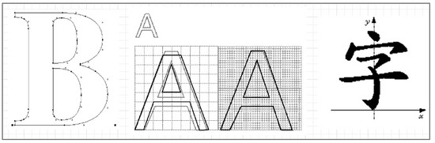
图 6-37 字形与点的关系
字体文件中不仅包含字形数据和点信息，还包括字符到字形映射、字体标题、命名和水平指标等，这些信息存在对应的表中，所以我们也可以认为 TrueType 字体文件由一系列的表组成，其中常用的表
及其作用如图 6-38 所示。
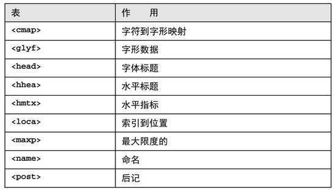
图 6-38 构成字体文件的常用表及其作用
如何查看这些表的结构和所包含的信息呢？我们可以借助第三方 Python 库 fonttools 将 WOFF 等字体文件转换成 XML 文件，这样就能查看字体文件的结构和表信息了。首先我们要安装 fonttools 库， 安装命令为：
$ pip install fonttools
安装完毕后就可以利用该库转换文件类型，对应的 Python 代码为：
from fontTools.ttLib import TTFont
代码运行后就会在当前目录生成名为 movie 的 XML 文件。文件中字符到字形映射表 cmap 的内容如下：
<cmap_format_4 platformID="0" platEncID="3" language="0">
map 标签中的 code 代表字符，name 代表字形名称，关系如图 6-39 所示。
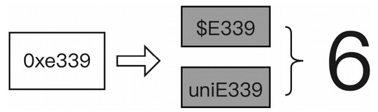
图 6-39 字符到字形映射关系示例
XML 中的字符 0xe339 与网页源代码中的字符 对应，这样我们就确定了 HTML 中的字符码与 movie.woff 字体文件中对应的字形关系。字形数据存储在 glyf 表中，每个字形的数据都是独立的，例如字形 uniE339 的字形数据如下：
<TTGlyph name="uniE339" xMin="0" yMin="-12" xMax="510" yMax="719">
TTGlyph 标签中记录着字形的名称、
x
轴坐标和
y
轴坐标（坐标也可以理解为字形的宽高）。contour 标签记录的是字形的轮廓信息，也就是多个点的坐标位置，正是这些点构成了如图 6-40 所示的字形。
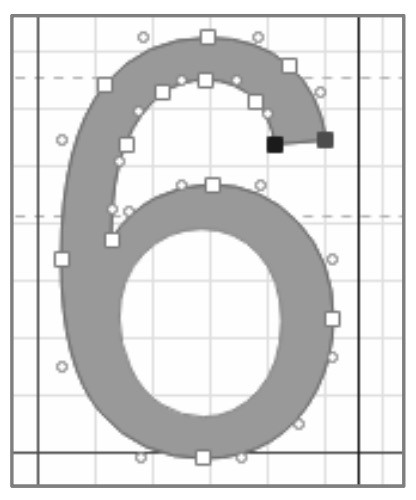
图 6-40 字形 uniE339 的轮廓
我们可以在百度字体编辑器中调整点的位置，然后保存字体文件并将新字体文件转换为 XML 格式，相同名称的字形数据如下：
<TTGlyph name="uniE339" xMin="115" yMin="6" xMax="430" yMax="495">
接着将调整前的字形数据和调整后的字形数据进行对比。
如图 6-41 所示，点的位置调整后，字形数据也会发生相应的变化，如 xMin、xMax、yMin、yMax 还有 pt 标签中的 x 坐标 y 坐标都与之前的不同了。
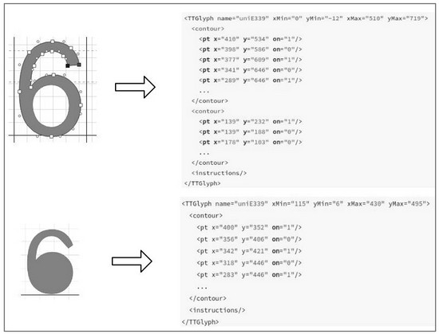
图 6-41 字形数据对比
XML 文件中记录的是字形坐标信息，实际上，我们没有办法直接通过字形数据获得文字，只能从其他方面想办法。虽然目标网站使用多套字体，但相同文字的字形也是相同的。比如现在有 movie.woff 和 food.woff 这两套字体，它们包含的字形如下：
# movie.woff
要实现自动识别文字，需要先准备参照字形，也就是人为地准备数字 0 ~ 9 的字形映射关系和字形数据，如：
# 0 和 7 与字形名称的映射伪代码，data 键对应的值是字形数据
当我们遇到目标网站上其他字体文件时，就可以使用参照字形中的字形数据与目标字形进行匹配，如果字形数据非常接近，就认为这两个字形描述的是相同的文字。字形数据包含记录字形名称和字形起止坐标的 TTGlyph 标签以及记录点坐标的 pt 标签，起止坐标代表的是字形在画布上的位置，点坐标代表字形中每个点在画布上的位置。在起止坐标中，
x
轴差值代表字形宽度，
y
轴差值代表字形高度。
如图 6-42 所示，两个字形的起止坐标和宽高都有很大的差别，但是却能够描述相同的文字，所以字形在画布中的位置并不会影响描述的文字，字形宽度和字形高度也不会影响描述的文字。
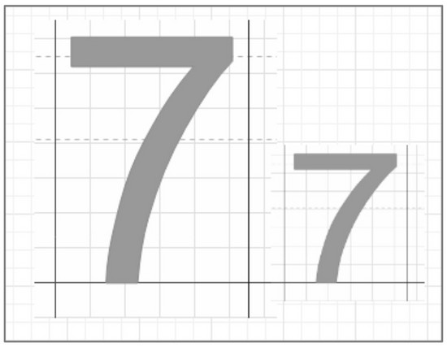
图 6-42 描述相同文字的两个字形
点坐标的数量和坐标值可以作为比较条件吗？
如图 6-43 所示，两个不同文字的字形数据是不一样的。虽然这两种字形的 name 都是 uniE9C7，但是字形数据中大部分 pt 标签 x 和 y 的差距都很大，所以我们可以判定这两个字形描述的并不是
同一个文字。你可能会想到点的数量也可以作为排除条件，也就是说如果点的数量不相同，那么这个
两个字形描述的就不是同一个文字。真的是这样吗？
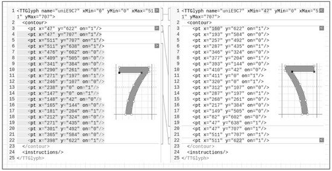
图 6-43 描述不同文字的字形数据对比
在图 6-44 中，左侧描述文字 7 的字形有 17 个点，而右侧描述文字 7 的字形却有 20 个点。对应的字形信息如图 6-45 所示。
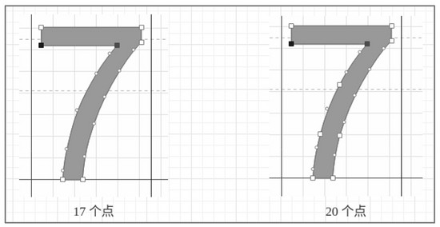
图 6-44 描述相同文字的字形
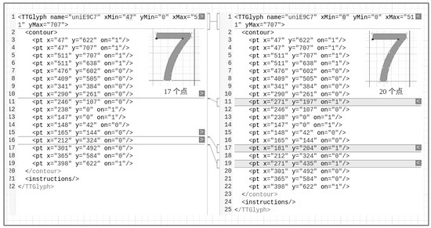
图 6-45 描述相同文字的字形信息
虽然点的数量不一样，但是它们的字形并没有太大的变化，也不会造成用户误读，所以点的数量并不能作为排除不同字形的条件。因此，只有起止坐标和点坐标数据完全相同的字形，描述的才是相同字符。
6.4.3 字体反爬虫绕过实战
要确定两组字形数据描述的是否为相同字符，我们必须取出 HTML 中对应的字形数据，然后将待确认的字形与我们准备好的基准字形数据进行对比。现在我们来整理一下这一系列工作的步骤。
(1) 准备基准字形描述信息。
(2) 访问目标网页。
(3) 从目标网页中读取字体编码字符。
(4) 下载 WOFF 文件并用 Python 代码打开。
(5) 根据字体编码字符找到 WOFF 文件中的字形轮廓信息。
(6) 将该字形轮廓信息与基准字形轮廓信息进行对比。
(7) 得出对比结果。
我们先完成前 4 个步骤的代码。下载 WOFF 文件并将其中字形描述的文字与人类认知的文字进行映射。由于字形数据比较庞大，所以我们可以将字形数据进行散列计算，这样得到的结果既简短又唯一，不会影响对比结果。这里以数字 0 ~ 9 为例：
base_font = {
字典中的 name 代表该字形的名称，value 代表该字形描述的文字，hex 代表字形信息的 MD5 值。
考虑到网络请求记录中的字体文件路径有可能会变化，我们必须找到 CSS 中设定的字体文件路径，引入 CSS 的 HTML 代码为：
<link href="./css/movie.css" rel="stylesheet">
由引入代码得知该 CSS 文件的路径为 http://www.porters.vip/confus... ，文件中 @font-face 处就是设置字体的代码：
@font-face {
字体文件路径为 http://www.porters.vip/confus... 。找到文件后，我们就可以开始编写代码了，对应的 Python 代码如下：
import re
因为 TTFont 可以直接读取 woff 文件的结构，所以这里不需要将 woff 保存为 XML 文件。接着以评分数据 9.7 对应的编码 #xe624.#xe9c7 进行测试，在原来的代码中引入基准字体数据 base_font，然后新增以下代码：
web_code = '.'
以上代码运行结果为：
['9', '7']
运行结果说明能够正确映射字体文件中字形描述的文字。
6.4.4 小结
字体反爬能给爬虫工程师带来很大的麻烦。虽然爬虫工程师找到了应对方法，但这种方法依赖的条件比较严苛，如果开发者频繁改动字体文件或准备多套字体文件并随机切换，那真是一件令爬虫工程师头疼的事。不过，这些工作对于开发者来说也不是轻松的事。